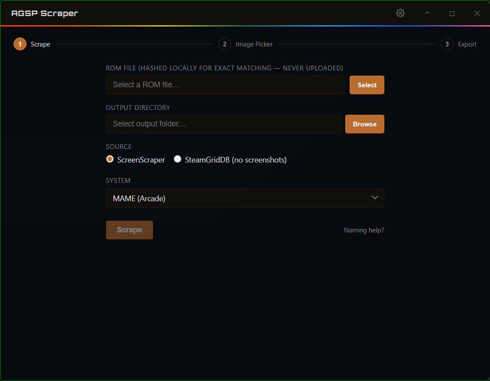
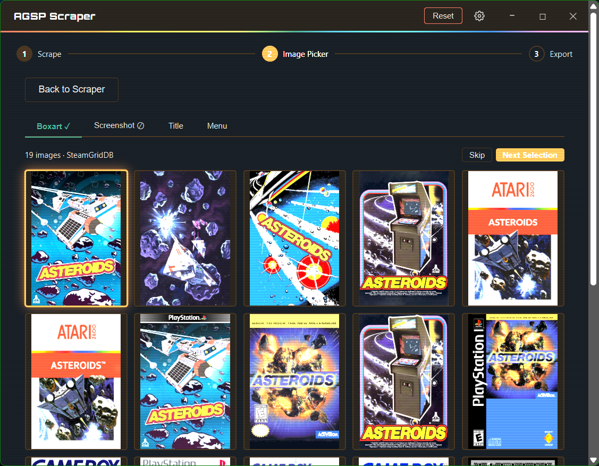
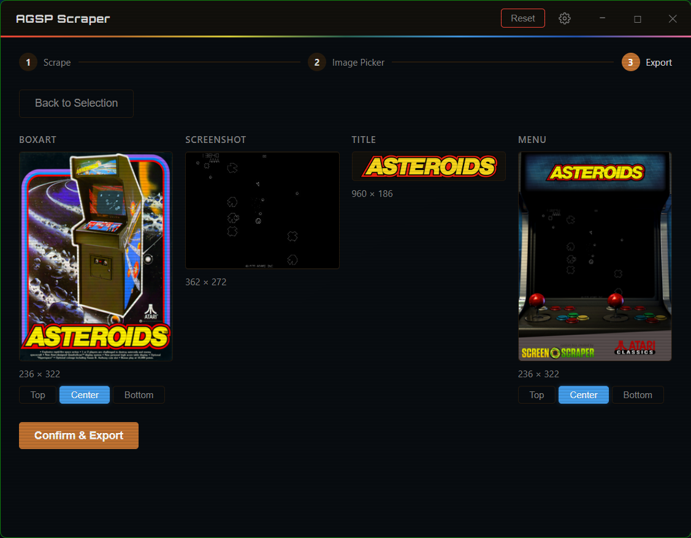

Artwork for your Atari Gamestation Pro ROMs.

01Select your ROM file, output folder, and art source — then hit Scrape

02Browse multiple candidates per art type and pick the one you want

03Preview the processed output across all four art types, then export
AGSP Scraper fetches boxart, screenshots, title screens, and menu art for your AGSP ROMs and automatically renames & resizes them to the exact pixel dimensions the Atari Gamestation Pro expects.
It searches ScreenScraper and SteamGridDB , lets you choose from multiple candidates for each art type, and writes the finished images directly to your output folder.
No telemetry, all FOSS.
.exe — no
installer, no admin rights, just download and run
Free and open source.
Requires Windows 10 or 11 (64-bit)
WebView2 runtime — usually pre-installed on Windows 10/11.
If the app doesn't open, install it from
Microsoft's site.
Do I need an account?
A free ScreenScraper account and SteamGridDB API key is needed to scrape.
What ROMs does it support?
AGSP Scraper is built to support the common ROMs supported by AGSP. The output filenames and image dimensions are tuned for the AGSP's art folder conventions. If you'd like to support more ROMs, contribute to the repo!
Does it work on Mac or Linux?
Windows only for now. The credential encryption relies on Windows DPAPI, and the Gamestation Pro is a Windows-adjacent device workflow. A cross-platform build isn't currently planned, but feel free to contribute.
Is it safe to use?
Yes. AGSP Scraper is open source (GPLv3), so you can read every line. Credentials are stored locally using Windows DPAPI — they never leave your machine. There is no telemetry, no analytics, and no account required to use the app itself.
The art doesn't look right — can I pick a different image?
Absolutely. The image picker shows multiple candidates for each art type (boxart, screenshot, title, and menu). If the first result isn't what you want, just click another thumbnail. You can also adjust the crop position (top, center, or bottom) for boxart and menu art. If there's still a problem, file an issue on GitHub.
Will it overwrite existing art files?
AGSP Scraper checks for existing files before exporting. If any output file already exists in the selected folder, it will warn you and ask for confirmation before overwriting.
Did you use AI?
Like I do in my day job (and really most devs these days), I used it to help me code, but I did not "vibe code" this project. I'm new to Rust & Tauri, so any and all feedback or suggestions are welcome via GitHub.
AGSP Scraper does not provide, host, or endorse ROM files of any kind.
It is not affiliated with MyArcade, Atari, ScreenScraper.fr, or
SteamGridDB. It was built by a fan who wanted retro gaming to be more
fun and accessible. Obtaining and using ROMs is entirely the user's
own responsibility.
I did my best to focus on security, but like all open-source products
I recommend reading through the code before using. I am always around
for questions via GitHub.